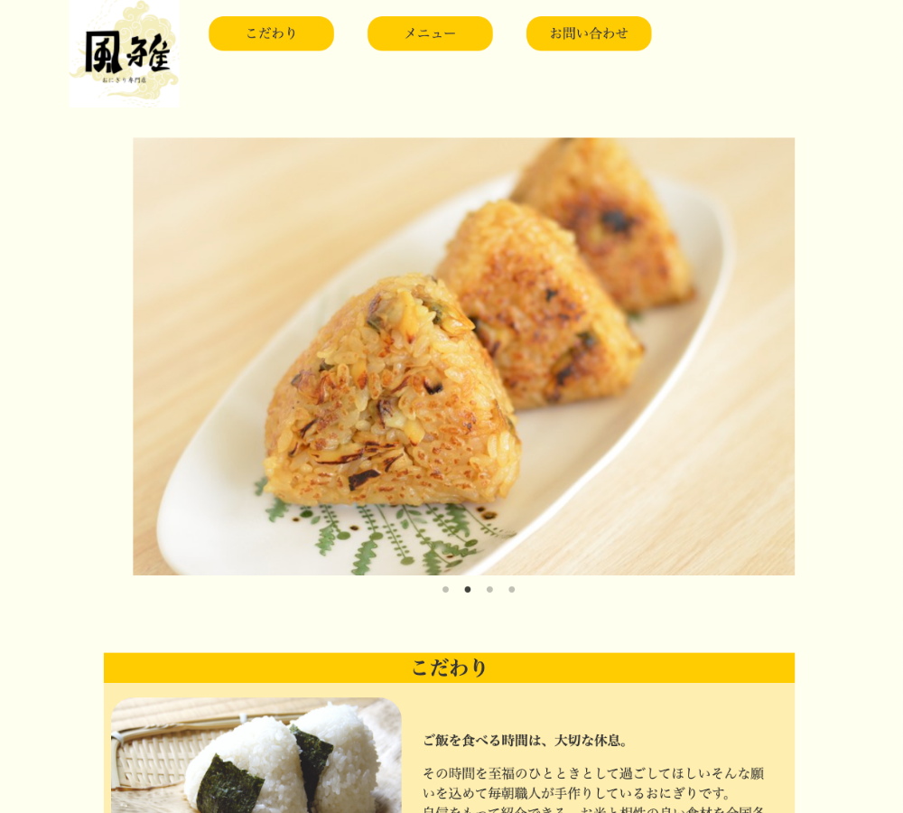

一から企画し制作をした作品です。架空のおにぎり屋さんをイメージしました。こだわりは温かみを感じられる配色と最初のページの写真のスライドショーです。
URL
https://onigiri-fuga.netlify.app
担当
デザイン・コーディング
サイトの目的
店舗を知ってもらう
ターゲット
働いている人（人の温もりを求めている人）
デザインについて
配色を悩みました。おにぎりの写真をいかしながら人の温もりを感じられるような色を探してこの色に決めました。
全てを一人で行うので自分の実力を知る機会にもなりました。
ロゴを考えるのに時間がかかりました。今回はおばあちゃんたちが協力しておにぎりを作っているお店をイメージしていたのでなかなか合うロゴがありませんでした。そこでないなら作って仕舞えばいいと思い自分で制作をしました。しかし、いざ自分で作ろうとしたらイメージを具現化する作業に時間がかかってしまいました。
コーディングについて
写真をスライドショーにする作業がとても大変でした。JavaScriptは触ったことはあったのですが、なかなか思い通りに行かなくて、えらーが発生してうまくいきませんでした。インターネットで調べながらなんとかつくることができました。